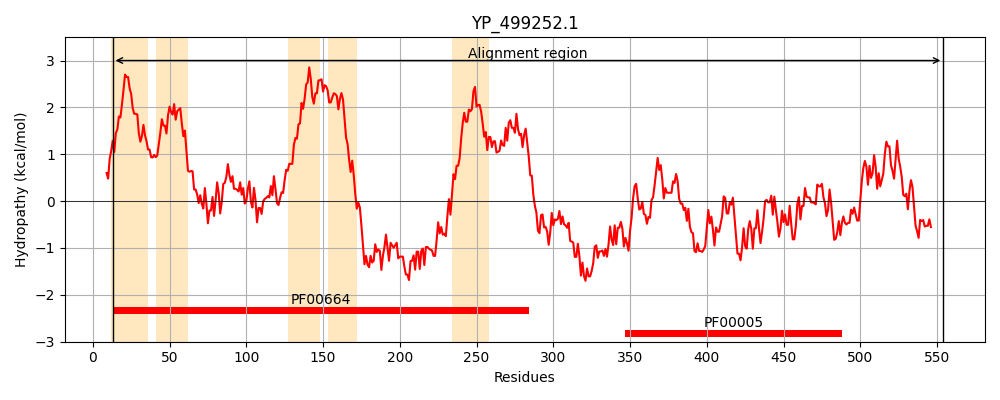
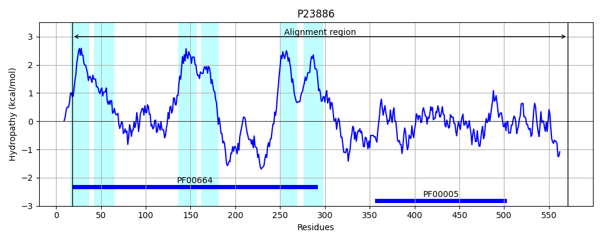
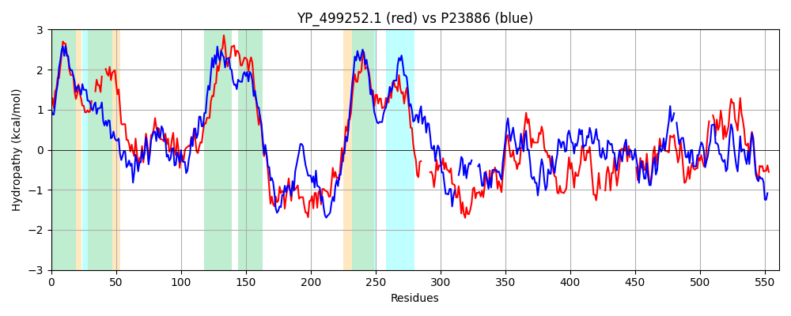

Hit Accession: P23886
Hit TCID: 3.A.1.129.1
Hit Description: gnl|BL_ORD_ID|9462 gnl|TC-DB|P23886|3.A.1.129.1 Transport ATP-binding protein cydC - Escherichia coli.
Mach Len: 561
e:0.000000
Query TMS Count : 5
Hit TMS Count: 6
TMS-Overlap Score: 4.450000
Predicted Substrates:CHEBI:5437;glutathione, CHEBI:4050;cysteine
BLAST Alignment:
Score: 564 , Bit scores: 221 bits, E-value: 4.6e-65, Alignment length: 561, Percentage identity: 29
Query: 13 LLLAIVVGVCGSLVALAMFFLSGYMVTQSALG--APLYAL--MILVVTVKLFGFLRAITRYVERLISHKATFTMLRDIRVQFFGKLVNVIPNVYRKLSSSDLISRMISRVEALQNIYLRVYYPPVVIGLTALVTVIVLAFISIGHALLIMVSMLFTLLIVPWLSSKKARTLKKHAANEQARFLNHFYDYKAGMDELRRFNQINHYRDNLMAKLNHFDKLQLKEQRFLTIYDFILNIIAMLSIFGSLVLGLIQINAGQLNIIYMTSIVLMVLTLFEQAVPMTNVAYY------KADTDQALHDINEVISVPSTNGKKRLNDKYDATNIYEVKDASFKYWNQQTYVLSDINFNVNRGEKIAIVGPSGSGKSTLLQIMAGLYQLDSGSVRFENMDMFEIDDKDKFESLNVLLQSQQLFDGTIRQNLF---TDEKDEAVQAIFKQLDLEHL----ALERQIDLDGHTLSGGEIQRLAITRMLLKDTASTWILDEPTTALDKQNSLKVMDLIE--AHAETLIVATHDLTLLSRFETIIVMINGKIVEKGNYQQLLANQGALWNMIQ 554
L L IV+ + L ++ + LSG+ ++ SA+ A LY+ M+ V+ R RY ERL+SH ATF +L+ +R+ F KL+ + P + +L++R+++ V+ L ++YLRV P V + +V I L+F+ A + ML TL ++P L + ++ ++ + + ++ + G EL F + YR L + + Q ++ + I+ +I L++ L + + + V L FE P+T + A L D ++ P T + R+ D+ T ++D F Y Q L I+ VN GE IAI+G +G GKSTLLQ + + G + + + +++ ++++V+ Q LF T+R NL DEA+ I +++ LE L L + G LSGGE++RLAI R LL D A +LDEPT LD ++++L+ +T+++ TH L LSRF+ IIVM NG+I+E+G + +LLA QG + Q
Sbjct: 18 LSLGIVLAIVTLLASIGLLTLSGWFLSASAVAGVAGLYSFNYMLPAAGVRGAAITRTAGRYFERLVSHDATFRVLQHLRIYTFSKLLPLSPAGLARYRQGELLNRVVADVDTLDHLYLRVISPLVGAFVVIMVVTIGLSFLDFTLAFTLGGIMLLTLFLMPPLFYRAGKSTGQNLTHLRGQYRQQLTAWLQGQAELTIFGASDRYRTQLENTEIQWLEAQRRQSELTALSQAIMLLIGALAVILMLWMASGGVGGNAQPGALIALFVFCALAAFEALAPVTGAFQHLGQVIASAVRISDLTDQKPEVTFPDT--QTRVADRVSLT----LRDVQFTYPEQSQQALKGISLQVNAGEHIAILGRTGCGKSTLLQQLTRAWDPQQGEILLNDSPIASLNEAALRQTISVVPQRVHLFSATLRDNLLLASPGSSDEALSEILRRVGLEKLLEDAGLNSWLGEGGRQLSGGELRRLAIARALLHD-APLVLLDEPTEGLDATTESQILELLAEMMREKTVLMVTHRLRGLSRFQQIIVMDNGQIIEQGTHAELLARQGRYYQFKQ 571 | Protein Hydropathy Plots: |
|---|
|  |  |
Pairwise Alignment-Hydropathy Plot:
|
|---|
|  |